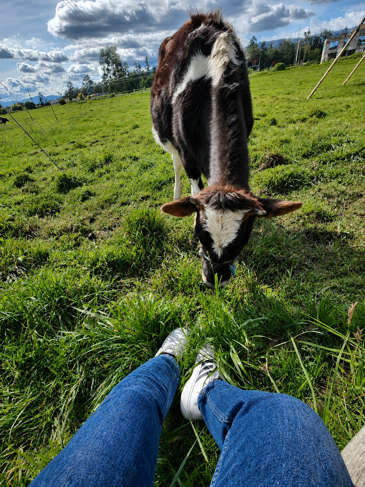

EDELROS nace desde historias reales de trabajo, esfuerzo y construcción desde cero. Desde el campo, la ganadería y el comercio, se formaron bases marcadas por la disciplina, la constancia y la capacidad de salir adelante. No es una empresa que nace desde lo heredado, sino desde la decisión de volver a empezar. Hoy, EDELROS representa ese proceso: transformar el trabajo en oportunidades reales, con visión, propósito y dirección. Este camino honra el legado de Edelmira, Jorge y Rosa.
Creemos en el campo como una oportunidad real de transformación. Trabajamos desde lo que tienes hoy para construir algo que crezca mañana, generando desarrollo, oportunidades y crecimiento sostenible.
“Crecer con propósito es honrar de dónde venimos y construir hacia dónde vamos.”


Procesos productivos enfocados en generar valor real desde la tierra.

Gestión eficiente y sostenible adaptada a cada contexto.

Capacitaciones prácticas y académicas para mejorar decisiones y resultados.

Estructuración de ideas que se convierten en ingresos reales y sostenibles.

Producción responsable que equilibra crecimiento, entorno y futuro.
Fe
Creemos en lo que construimos.
Trabajo con propósito
Cada acción tiene dirección.
Amor por la tierra
Es nuestro origen y oportunidad.
Crecimiento compartido
Nadie crece solo, avanzamos juntos.
Fuerza y constancia
Persistimos con disciplina, seguimos incluso en los desafíos.
Visión
Construimos pensando en el futuro.
Nosotros te ayudamos a transformarlo en crecimiento.
La convertimos en oportunidades reales.
Aplicada en cada proceso.
Tu crecimiento es también nuestro compromiso.
Cuéntanos qué tienes y hacia dónde quieres ir. Te ayudamos a construir el camino.